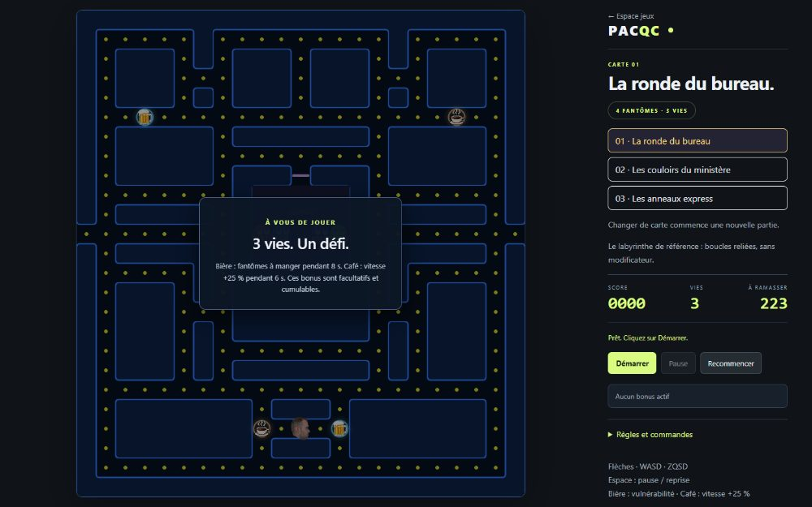

Au ministère de l'Éducation du Québec depuis 2022
Veille et recherche internationale en éducation ; rédaction de notes informationnelles pour les autorités.
Science politique, politiques publiques, données et prospective.
Veille et recherche internationale en éducation ; rédaction de notes informationnelles pour les autorités.
établissement Après une maîtrise (2026) et un baccalauréat (2024) en science politique à l'Université Laval.
Français, anglais, espagnol.
Cinq notes de prospective, un effet papillon, moins de cinq minutes de jeu.


Les dépenses sociales réduisent-elles les inégalités dans les pays de l'OCDE ? Projet de session du cours d'outils numériques POL-6078 : données de l'OCDE depuis 2010, régression linéaire multiple en R.
Depuis déc. 2022 · stage, puis emploi en cours · dates du stage, intitulé du poste
En cours · établissement, date de début
Université Laval · 2024 – mai 2026
Depuis sept. 2024, fonction terminée · date de fin
Université Laval · automne 2020 – hiver 2024
Citelum, Paris · 2018 – 2019
Les flèches indiquent une activité en cours ; le pointillé, une date à confirmer.
français ; anglais (avancé) ; espagnol (intermédiaire) ; allemand niveau
Poste, stage, collaboration ou simple conversation :
leo.matrat.pro@gmail.com